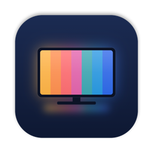
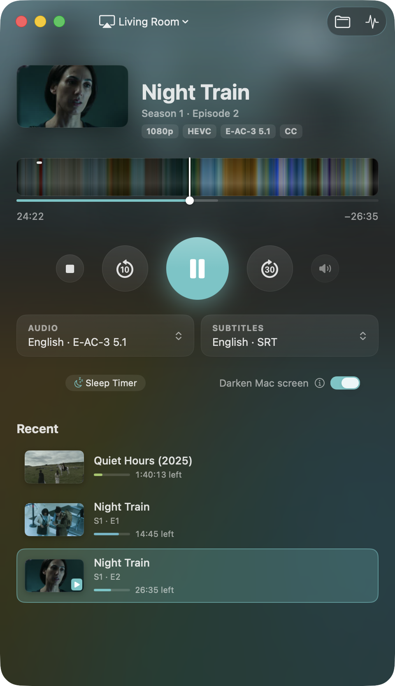
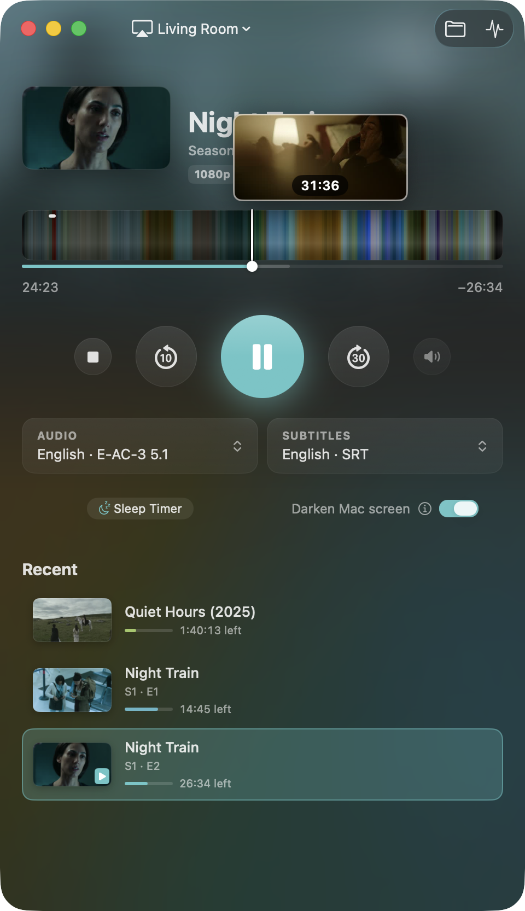
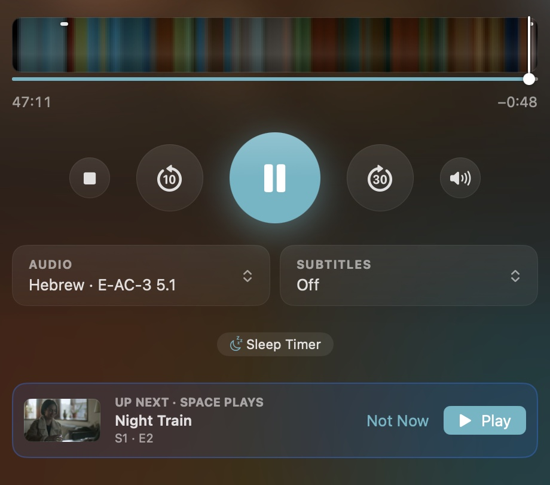
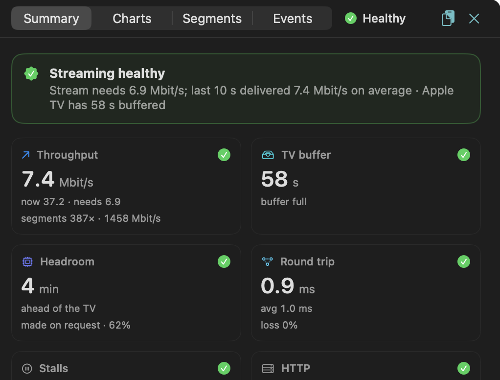
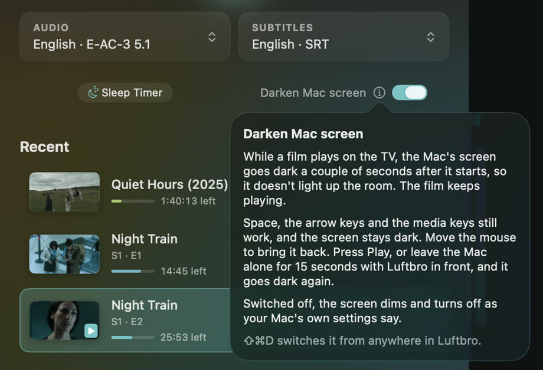

Luftbro
A Mac app that plays your own films and series on an Apple TV, MKV included. The Mac is the remote.


What it does
Plays files the Apple TV won't open, and starts in about a second. 4K HDR, Dolby Vision and Atmos get there untouched.
Skip Intro and Next Episode, also when the file has no chapters.


The timeline is the film in its own colours, with a frame where you hover.

Every film gets its own look.


When a stream stutters, it says why.


The Mac's screen goes dark while you watch, so it doesn't light up the room. Space and the arrow keys still work in the dark, and the mouse brings it back.

Subtitles move to match the speech. No account, no server to set up, nothing sent anywhere.
Install
- Download the .dmg and drag Luftbro to Applications.
- It isn't notarized (that's $99 a year), so macOS warns the first time. Click Done, then System Settings → Privacy & Security → Open Anyway. Or run this once:
xattr -dr com.apple.quarantine /Applications/Luftbro.app - Pick your Apple TV at the top left and type the PIN it shows.